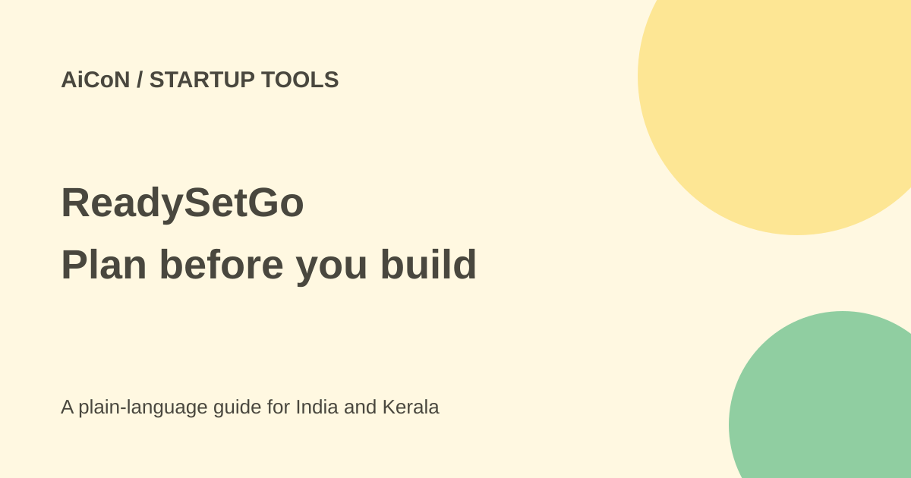

ReadySetGo: a free beta for planning your product
ReadySetGo is thoughtbot's AI product-planning tool. It helps you question a rough idea and define a first version before building. It is free during open beta for a limited time, with a daily new-user cap.

What does it help you decide?
The tool walks through the problem, audience, market and first version. It aims to challenge assumptions rather than praise every idea. That is the maker's description, not a guarantee that the plan is correct.
The current site describes ten steps, saved progress and a final plain Markdown export. The output includes the problem statement, assumptions, what you learned, ideas you cut and a task list for a developer or AI coding tool.
For an adult student or founder in Kerala
You could use it to think through a college project, a local shop tool or a new service. Give it the actual customer problem and evidence, not just a list of features. A plan based on made-up demand is still made-up, even if it reads well.
The page does not confirm Indian account access or language support. We did not create an account. Use it as a planning aid, then test the ideas with real people in your intended market.
How to try a sprint
- Open the official ReadySetGo site and read the beta terms and privacy policy.
- Check whether new-user access is available. The maker says daily sign-ups can be capped.
- Describe the idea in plain words: who has the problem, what happens today and why it matters.
- Bring any customer interviews or public research you have permission to use.
- Work through the ten steps. Question the tool's research and conclusions; ask for sources you can inspect.
- Define the smallest useful first version and what would show that it works.
- Export the plan as Markdown. Review it with a developer and actual potential users before spending money.
Cost and beta limits
Both the product page and thoughtbot's October launch post say it is free during open beta for a limited time. A price after beta was not confirmed. Do not budget as if it will remain free forever.
Saved progress lets you return later, according to the site. The daily new-user limit is not stated as a number. No hands-on sign-up or export test was made.
Keep sensitive ideas private
The privacy policy says the service is not intended for people under 18. The terms say it is not designed for highly sensitive or regulated information.
The policy says prompts and full conversations are stored with projects and sent to third-party AI providers. thoughtbot says its commercial provider terms prohibit model training on that content. That is its policy statement, not an independent audit. Data can be processed in the United States and other countries. Deletion requests can leave limited backup or legally retained copies.
Read the linked privacy and terms before entering confidential plans, customer data or investor documents. Remove names and private details from a test idea. An AI planning tool does not validate legal, medical or financial claims in your business.
What changed since the original post?
The current site confirms saved progress and Markdown export. We separate a planning document from a working application: the described open beta is a product sprint, not a promise that a complete app will be built for you.
Frequently asked questions
Do I need to code?
The site says no technical background is needed to do the planning steps.
Will it build the app?
The current page promises a build-ready plan and task list. It does not promise a finished app.
Does it prove my idea is good?
No. Check the assumptions with real users and evidence.
Sources: ReadySetGo product and FAQ · thoughtbot beta announcement · Privacy policy · Terms. Checked 7 October 2026.